Рецепт с фото пошаговый
Для приготовления этой солянки используют те же мясные продукты, что и для солянки сборной. Но добавляется вареный картофель, нарезанный дольками. Благодаря этому домашняя солянка получается сытнее.
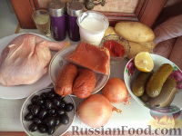 Подготовить продукты для домашней солянки с картофелем.
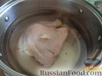 Сварите из мяса курицы бульон. Для этого мясо вымойте, залейте холодной водой, доведите до кипения. Снимите пену шумовкой. Варите мясо на небольшом огне под крышкой 1 час. Готовое мясо достаньте из бульона и оставьте остывать.
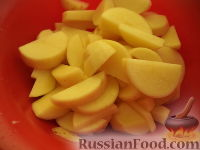 Пока варится курица, почистите, вымойте и нарежьте ломтиками картофель.
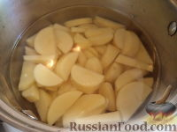 Картофель сложите в кастрюлю, залейте водой. Проварите минут 10-15, до готовности.
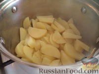 С готового картофеля слейте воду.
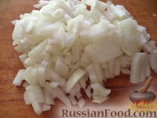 Репчатый лук очистите, вымойте, нашинкуйте.
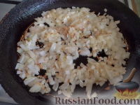 Разогрейте сковороду, налейте растительное масло. В горячее масло выложите подготовленный лук.
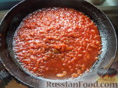 Лук обжарьте на среднем огне, помешивая, 1-2 минуты. Добавьте томатную пасту, перемешайте. Потушите с томатной пастой и маслом, подлив немного бульона, 1 минуту на небольшом огне.
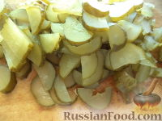 Огурцы очистите по желанию, разрежьте на две части, каждую нарежьте ломтиками толщиной 2—3 мм.
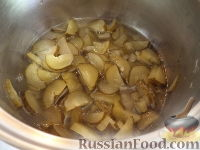 Огурцы припустите в небольшом количестве бульона (на минимальном огне под крышкой, 10 минут).
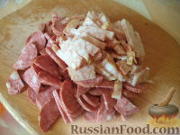 Вареное мясо, колбасу, сосиски, вареную или копченую свинину и т.п. нарежьте тонкими ломтиками или соломкой.
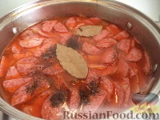 Мясные продукты положите в готовый бульон вместе с жареным луком, добавьте огурцы, лавровый лист и варите 5-10 минут.
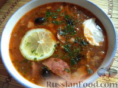 Солянка домашняя готова! При подаче к столу положите сметану, немного рубленой зелени, если есть — ломтик лимона, несколько маслин или каперсов.